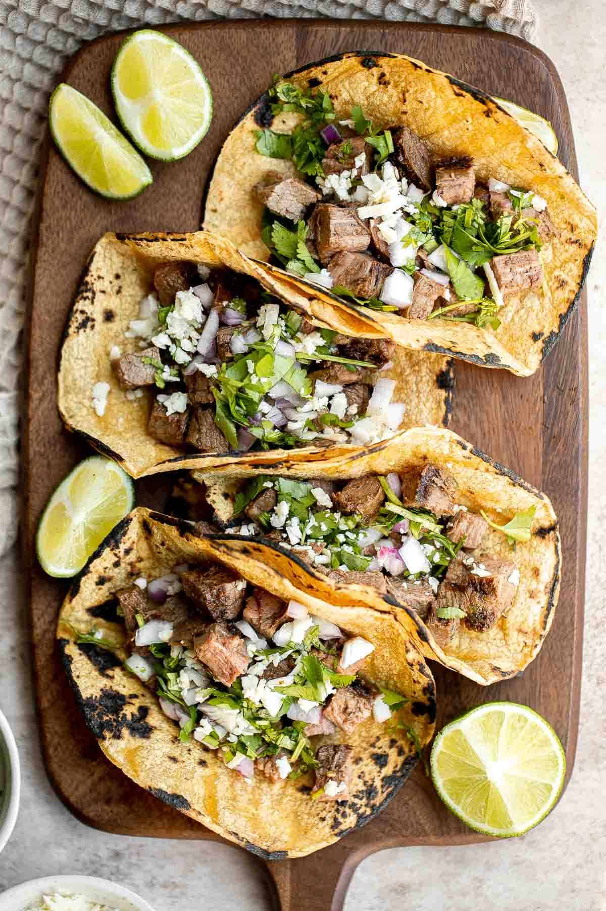

Carne Asada Tacos Recipe

Description
These carne asada tacos come together easily as a hearty dinner or lunch for 4. The orange juice and lemon juice fill the marinade with flavor. Reserve some marinade, then reduce it down and use it to glaze the grilled steak at the end. Serve the tacos with your favorite toppings like pico de gallo and guacamole!
By Katie Aubin & Ali Clarke
Tasty Team
Ingredients
- ⅓ cup canola oil(80 mL)
- ⅓ cup distilled white vinegar(80 mL)
- ⅓ cup fresh lime juice(80 mL)
- ⅓ cup fresh orange juice(80 mL)
- 4 teaspoons garlic, minced
- 3 tablespoons jalapeño, minced
- ¼ cup fresh cilantro(10 g), finely chopped, plus whole leaves for serving
- 2 teaspoons kosher salt
- 1 teaspoon ground coriander
- ½ teaspoon ground cumin
- 1 teaspoon freshly ground black pepper
- 1 teaspoon chili powder
- 1 lb flank steak(455 g)
- 8 white corn tortillas, 5 inch (12.5 cm)
- pico de gallo, for serving
- guacamole, for serving
- sour cream, for serving
- cotija cheese, for serving
Cooking Instructions
- In a large bowl, mix together the oil, vinegar, lime juice, orange juice, garlic, jalapeño, chopped cilantro, salt, coriander, cumin, pepper, and chili powder.
- Place the steak in a resealable bag. Pour in 1 cup (240 ml) of the marinade and set the rest aside. Seal the bag and shake to evenly coat the steak in the marinade and refrigerate for 1 to 4 hours.
- In a small pan, bring the reserved ½ cup (120 ml) of marinade to a boil over medium-high heat. Cook until thickened and reduced by half, about 5 minutes. Remove from the heat and set aside.
- Heat a large grill pan over high heat until very hot. Remove the steak from the bag and discard the marinade. Cook the steak on 1 side until there are dark grill marks and it is beginning to caramelize around the edges, about 6 minutes. Flip and cook on the other side for 5 minutes for medium rare, or 7 minutes for medium. Transfer to a cutting board and let rest for 5 minutes.
- Working in batches, heat the corn tortillas in a pan over medium-high heat, turning with tongs, until softened and just beginning to brown in spots, about 1 minute per side. Wrap the toasted tortillas in foil to keep warm.
- Thinly slice the steak against the grain, then cut the slices in half. Transfer to a large bowl and toss with the reduced marinade to coat.
- Serve the steak with the warm tortillas, pico de gallo, guacamole, sour cream, cotija cheese, and cilantro leaves, if desired.